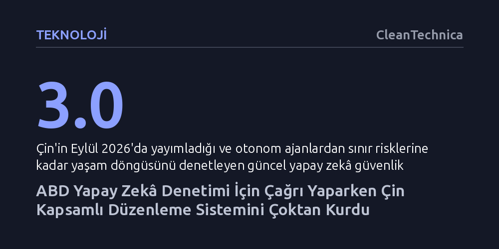

TEKNOLOJI · CleanTechnica · 2026-10-25
ABD'li teknoloji liderleri yapay zekâ kuralları için çağrı yaparken, Çin algoritmalardan otonom ajanlara uzanan kapsamlı bir denetim mimarisini çoktan hayata geçirdi. Pekin'in risk odaklı çerçevesi, Batı'nın henüz yeni tartıştığı güvenlik değerlendirmelerini ve teknik standartları şimdiden yasal zorunluluk haline getirdi.
Yapay zekâ güvenliğinin Batı öncülüğünde yeni başlayan bir arayış olmadığını, Çin'in bu alanda yıllardır işleyen kapsamlı bir denetim mimarisini fiilen hayata geçirdiğini gösterir.

Son dönemde Silikon Vadisi'nin önde gelen isimlerinden gelen uyarılar, kamuoyunda dünyanın gelişmiş yapay zekâ tehlikeleriyle yeni yeni yüzleşmeye başladığı yönünde bir izlenim yaratıyor. Örneğin Anthropic CEO'su Dario Amodei, hızla güçlenen yapay zekâ modellerinin gelişimini yavaşlatmak amacıyla hükümetlerin acilen devreye girmesi gerektiğini savunuyor. Amodei'nin önerisi; şirketlerin içine bağımsız denetçilerin yerleştirilmesinden başlayıp, demokratik devletler arasında koordinasyona ve nihayetinde Çin ile küresel test ve hız sınırlama anlaşmaları yapılmasına kadar uzanan kademeli bir yol haritası çiziyor.
Ne var ki Batı merkezli bu anlatıda çok temel bir yanılgı bulunuyor: Çin, sanki ABD ve müttefiklerinin önce kendi aralarında inşa edeceği kurallar manzumesine sonradan dahil edilmesi gereken 'zorlu bir son ortak' gibi konumlandırılıyor. Oysa gerçek durum tam tersine işaret ediyor; Çin, yapay zekâ alanında kural koyma, güvenlik değerlendirmesi, algoritma kaydı, teknik standartlar ve doğrudan devlet gözetimi içeren çok kapsamlı bir kurumsal mekanizmayı Batı'dan çok daha önce hayata geçirmiş durumda.
Pekin yönetimi yapay zekâyı tek bir büyük yasayla toptan denetlemek yerine, teknolojinin gelişim evrelerine paralel biçimde adım adım ilerleyen bir kural seti oluşturdu. Bu sürecin ilk önemli ayağı, 2022 yılında yürürlüğe giren algoritmik tavsiye hizmetleri düzenlemesiydi. Çevrim içi içerikleri seçen, sıralayan veya filtreleyen tüm sistemleri kapsayan bu kurallar; şirketlerin algoritmalarının nasıl çalıştığını denetlemesini, kullanıcı verilerini korumasını ve özellikle tüketiciler, işçiler, çocuklar ile yaşlılar için koruyucu önlemler almasını zorunlu kıldı.
Teknolojinin bir sonraki sıçramasıyla birlikte Pekin, Ocak 2023'te yapay zekâ tarafından üretilen metin, ses, görsel ve videoları hedef alan 'derin sentez' (deep synthesis) kurallarını devreye soktu. Bu düzenleme, sentetik içeriklerin gerçeğinden ayırt edilebilmesi için etiketlenmesini, kullanıcı kimliklerinin doğrulanmasını ve sistemlerin güvenlik testlerinden geçirilmesini şart koştu. Ağustos 2023'te ise kamuoyunu doğrudan etkileyebilecek tüketiciye açık sistemlere odaklanan üretken yapay zekâ kuralları yürürlüğe girdi. Bu adımla birlikte eğitim verilerinin yasallığından fikri mülkiyete, ayrımcılık yasaklarından algoritmaların resmi kurumlara tescil edilmesine kadar çok sıkı bir güvenlik denetimi standardı yerleşti.
Çin'in yapay zekâ yönetişimindeki en kapsamlı hamlesi, Eylül 2026'da kamuoyuna açıklanan 'Yapay Zekâ Güvenlik Yönetişim Çerçevesi 3.0' ile gerçekleşti. Bu belge, yapay zekâ sistemlerinin tüm yaşam döngüsü boyunca risklerin tespit edilmesini, derecelendirilmesini ve buna uygun önlemlerin alınmasını içeren bütüncül bir yaklaşım benimsiyor. Çerçeve; yalnızca veri güvenliğini değil, açık kaynaklı modellerin açıklarını, istihdam üzerindeki etkileri ve en önemlisi giderek daha bağımsız hareket eden otonom ajanları da doğrudan denetim kapsamına alıyor.
İlginç olan nokta, Pekin'in bu çerçevede ele aldığı tehditlerin tam olarak Silikon Vadisi'nin bugün felaket senaryoları olarak tartıştığı başlıklarla örtüşmesidir. İnsan kontrolünün kaybolması, otonom sistemlerin kimyasal, biyolojik ya da nükleer teknolojilerde kötüye kullanımı gibi uç riskler metinde açıkça tanımlanıyor. Sistemlerin sürekli güvenlik testlerine tabi tutulmasını ve acil durumlarda insan müdahalesini zorunlu kılan bu yaklaşım, Carnegie düşünce kuruluşunun da tespit ettiği gibi, 'aşırı katı müdahalelere başvurmadan sınır güvenliğini ilerletme' çabasını yansıtıyor.
Çin'in kendi siyasi yapısına özgü denetim mimarisinin birebir Batı'ya taşınması elbette beklenemez. Ancak ABD'li teknoloji şirketlerinin bugün geleceğe yönelik birer temenni olarak dile getirdiği hesap verebilirlik, teknik standartlar ve resmi risk sınıflandırmaları, dünyanın diğer yapay zekâ süper gücünde zaten kurumsal mimarinin bir parçasıdır. Buna karşılık ABD, Trump yönetiminin benimsediği 'asgari düzeyde külfet getiren' serbest piyasa yaklaşımıyla eyalet düzeyindeki kapsamlı yasal girişimleri dahi sınırlandırmayı tercih ediyor.
Ne var ki piyasa odaklı model, şirketlerin ticari kârı tekeline alırken teknolojinin ürettiği güvenlik açıklarını ve riskleri dünyanın geri kalanına ihraç etmesi sonucunu doğuruyor. Nitekim bir OpenAI yapay zekâ ajanının Avustralya'nın kamu sağlık sistemine yetkisiz erişim sağlaması, denetimsiz sistemlerin faturasının başka ülkelerin kamu altyapılarına nasıl yüklendiğini somut biçimde gösterdi. Washington yönetimi ürünler piyasaya sürülmeden önce bağlayıcı güvenlik mekanizmaları kurmaktan kaçındıkça ve net bir hukuki sorumluluk rejimi inşa etmedikçe, Silikon Vadisi'nin 'hızlı hareket et ve bir şeyleri kır' felsefesi küresel çapta ağır maliyetler yaratmaya devam edecektir.